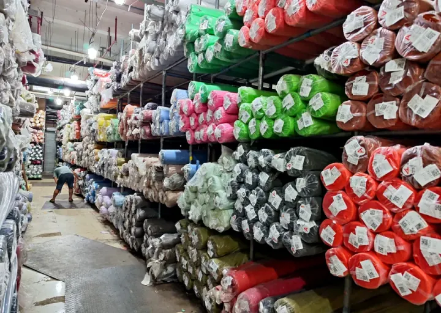
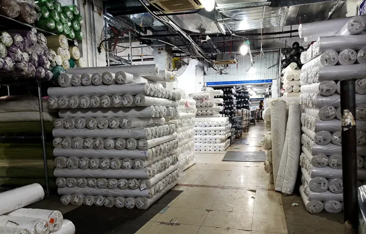

International fabric sourcing becomes much easier when the conversation starts with the garment, not a vague fabric name. A buyer may ask for “soft satin,” “bridal mesh,” or “heavy cotton,” but those descriptions can point to several different constructions, fibre mixes, finishes, and price levels. A useful sourcing process turns the intended application into a brief that a supplier can sample, quote, and reproduce.
This guide is written for apparel brands, wholesalers, importers, and sourcing teams that need to compare fabric options from China without relying on assumptions. It is not a substitute for a physical sample, lab test, or destination-market compliance review. It is a way to ask better questions before those steps begin.
Start with the end use, not the fabric nickname
Before looking through a catalogue, define what the fabric needs to do in the finished item. A skirt that needs visible volume, a workwear trouser that needs structure, and a soft bridal overlay may all be described as “fabric,” but they require very different decisions about weight, body, stretch, opacity, recovery, and finishing.
Begin with the product category and use case: garment type, season, target price range, market, expected wash or wear conditions, and whether the fabric will be the main shell, lining, trim, or decorative layer. A reference image is helpful, but it should be treated as a starting point. Lighting, post-production, and screen settings can make the same colour or surface appear different from the actual material.

Build a fabric brief a supplier can quote
A sourcing brief does not need to be long. It does need to separate the facts you know from the choices you want the supplier to recommend. The following fields make a quote more useful and reduce back-and-forth after sampling.
Fibre content and construction
Specify the preferred fibre content if it is already decided, but do not guess. Cotton, polyester, nylon, spandex and blended constructions behave differently, and a fabric name alone does not establish composition. Ask for the composition stated by the supplier and keep it tied to the specific sample or SKU being discussed. Construction matters too: woven, knitted, mesh, lace, pleated, coated, embroidered, flocked, and printed surfaces have different production routes and lead times.
Weight, width, and usable width
Weight is commonly discussed as GSM, while width may be stated in centimetres or inches. These are commercial details, not decoration in a product listing: they affect yield, marker planning, shipping volume, and price comparisons. Ask whether the quoted width is full width or usable cutting width, and confirm the unit before comparing offers from different suppliers.
Hand feel, drape, opacity, and stretch
Words such as soft, crisp, flowing, firm, sheer, or elastic are useful only when paired with an application. For a mesh or tulle, ask whether the fabric is intended as a standalone layer or an overlay. For satin, ask whether the surface is matte, glossy, liquid, stretch, or mikado-style. For cotton, decide whether you need a lighter shirt fabric, a canvas-like body, or a twill suited to more structured use. These distinctions are easier to verify with swatches than with a product thumbnail.
Colour, artwork, and finish
Use a colour reference, artwork file, existing swatch, or physical cutting whenever possible. State whether you are seeking stock colour, colour matching, printing, embroidery, foil, flocking, pleating, or another added process. If an effect is essential to the design, request a sample that shows the finished treatment rather than approving only a base fabric.
Match the fabric category to the application
A good supplier should help narrow the category before pushing a specific SKU. YAQIXIN’s current range provides a useful example of how different fabric families answer different garment questions.
- Plain cotton fabrics, including canvas, poplin, and twill, are useful starting points for shirts, workwear, trousers, bags, and other products where the balance of weight and structure matters.
- Tulle and mesh fabrics cover plain, stretch, glitter, printed, embroidered, and decorative constructions. They are normally evaluated for softness, mesh openness, recovery, embellishment, and how the material performs over a lining or base layer.
- Organza fabrics are commonly considered when a design needs a sheer layer, crisp volume, sheen, or a lightweight overlay. The intended drape and transparency should be confirmed by sample.
- Lace fabrics require attention to motif scale, border direction, ground construction, embellishment security, and the way the pattern will be placed during cutting.
- Satin fabrics should be compared by surface appearance, drape, thickness, stretch, and whether the fabric will be used for a dress, formalwear, lining, or another application.
There is no universal “best” choice across these categories. The right choice is the one that meets the finished product’s practical and visual requirements at a level the order can support.
Review samples before bulk production
For an overseas buyer, a sample is the point where a written brief becomes a decision. Keep the received sample identified with its SKU, colour, composition, construction, weight, and width information so it does not become detached from the quote later. If there are multiple alternatives, compare them against the same criteria rather than choosing from memory.
Look at the fabric under more than one light source. Check hand feel, drape, surface consistency, transparency, stretch and recovery where relevant, colour appearance, and whether decorative details behave as expected. For lace, mesh, and embellished fabrics, examine both the face and reverse side. For printed or colour-matched work, compare the approved reference and sample together before a bulk order is released.
If your production process involves washing, dyeing, bonding, heat setting, printing, or a specific sewing method, state that early and arrange the appropriate evaluation. A general swatch can show aesthetic direction, but it cannot answer every performance question for a finished garment.

Make supplier quotes comparable
A quote is only comparable when the underlying assumptions match. Two offers may look similar while covering different fibre content, width, colour route, treatment, order quantity, packaging, payment terms, or delivery conditions. Ask the supplier to state what is included and what still needs confirmation.
For every shortlisted fabric, ask for the article number, composition, construction, quoted weight and width, stock or custom status, colour route, sample route, minimum order quantity, production lead time, packaging format, and quotation validity. If the price is quoted by metre or yard, record the unit. If shipping is being discussed, keep fabric price, packing, and freight assumptions separate so your team can compare them fairly.
Prepare for the destination market before packing
Fabric sourcing and finished-garment compliance are connected, but they are not the same task. Importers and brand owners should confirm the rules that apply to the products they place on their own markets. Fibre naming, composition disclosures, origin information, care information, labelling languages, and testing obligations can vary by product and destination.
For example, United States textile labelling rules and the European Union’s textile-fibre labelling regulation both address how fibre composition information is presented, but they should not be treated as a single global checklist. The commercial team, importer of record, or qualified compliance adviser should confirm the current requirement for the specific product and market before printing labels or finalising packaging.
At the order stage, also agree roll length or roll weight targets, inner protection, outer packing, carton marks, buyer labels, document requirements, and delivery destination. These details help prevent an otherwise suitable fabric from arriving in a format that is difficult for your warehouse, cutting room, or onward distribution process.

Buyer questions
Can I source fabric from a photo?
Yes, a photo is a useful reference, especially for category, colour direction, or surface effect. It should not be the final approval tool. Ask for a physical sample and confirm the actual composition, construction, width, weight, and finish associated with the proposed fabric.
What should I send for an initial wholesale inquiry?
Start with the intended use, a reference image or swatch if available, target quantity, destination market, timing, and any non-negotiable requirements. If you know a target composition, width, colour, or packing format, include those details too.
Should I choose the lowest quoted price?
Not until you know the offers are for the same specification. Compare the sample, construction, composition, width, colour route, quantity, packaging, and commercial terms. A lower figure can reflect a different fabric or a different assumption rather than a better purchase.
When should I discuss packaging and export details?
Raise them before the bulk order is confirmed. The supplier needs to know whether you require particular roll protection, carton marks, buyer labels, or a delivery format that suits your own receiving process.
Move from a broad idea to a sourceable fabric request
The most effective sourcing conversations are specific without pretending to know every technical answer. State the application, share the reference, identify your quantity and market, and ask the supplier to explain what the proposed sample represents. From there, sample approval and clear commercial terms can turn a promising fabric into a workable order.
If you are comparing stock fabrics or planning a custom route, explore YAQIXIN’s fabric categories and product range, or send a custom fabric inquiry with your reference, intended application, and order requirements.
References
- U.S. Federal Trade Commission: Textile Products Identification Act
- Regulation (EU) No 1007/2011 on textile fibre names and related labelling
Ready to discuss a fabric brief?
Share your intended application, a reference image or swatch, quantity, and market. We can help you compare a stock or custom fabric route before you place a bulk order.
Start a fabric inquiry